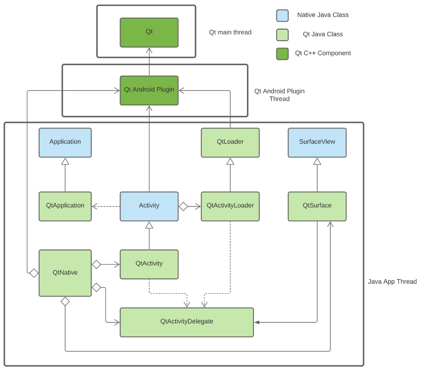

Qt for Android: How It Works
If you're a developer looking for a high level overview of how Qt supports the Android platform, this page is for you.
The video from the 2021 Qt World Summit gives an overview of Qt for Android.
"A picture of an agenda that links to a YouTube video"
Architecture
Activities
The implementation of Qt for Android is made up of three main parts, and the glue in between:
- Qt Core
- the Android QPA plugin
- The Java Android code

- The default entry point for a Qt app is the QtActivity, which upon starting, will call the QtActivityLoader which will try to load the application by calling the QtActivityDelegate.
- QtActivityDelegate will make the necessary calls to load the Qt libraries and the main app library with the help of QtNative.
- QtNative handles the various Java operations that don’t need to be exposed, such as: loading the libraries and handling files.
- The QtActivityDelegate also handles the different listeners and input handlers and propagate them from Java to Qt.
Services
The architecture here is similar to that of Activities, but with services specific classes.
For information on how Qt supports Services in Android see Android Services.
Build configuration
For more information on configuration Qt for Android Builds see Environment Variables Used by Qt for Android and {Qt for Android: CMake}.